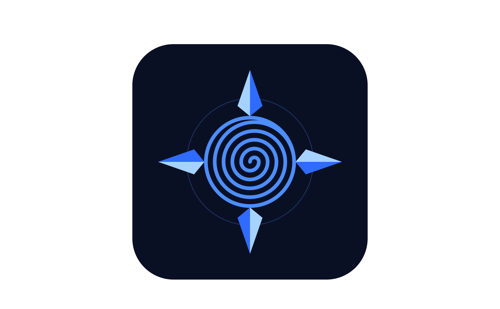
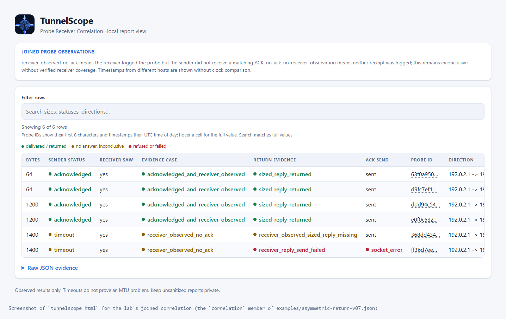

IPv4 / IPv6 · JSON / HTML

Görseller projenin GitHub deposundan alınmıştır.
PYTHON · AĞ ÖLÇÜMÜ & MTU KANITLARI
TunnelScope
Ping çalışıyor, SSH çalışıyor ama VPN üzerinden büyük bir dosya kopyalaması takılıyor. Bu genelde paket boyutu sorunu. TunnelScope karşı uçtaki küçük bir alıcıya seçtiğin boyutlarda UDP probları gönderiyor ve her birinin başına geleni yazıyor: onaylandı, yerelde reddedildi ya da zaman aşımına uğradı. İki ucun kaydı eşleşince “hiç ulaşmadı” ile “ulaştı ama cevabı kayboldu” ayrılıyor.
v0.9.6 alpha, PyPI'da. 169 test geçiyor; üç kişi dışarıdan PR gönderdi.
Teknik ayrıntılar
--sized-reply ile alıcı, probla aynı boyutta cevap veriyor; tek koşuda iki yön de test ediliyor. WireGuard, OpenVPN, IPv6 geri bildirim, asimetrik dönüş yolu, Windows/WSL2 alıcısı ve iki düğümlü Calico kurulumlarında denendi. Hepsi kontrollü laboratuvar; gerçek bir üretim VPN'inden henüz rapor gelmedi. Bulunan aralık kesin yol MTU'su değil.